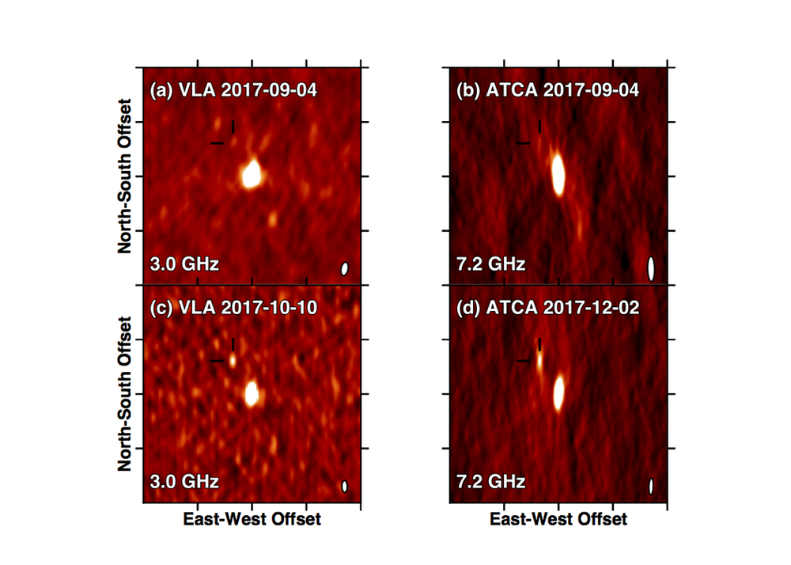
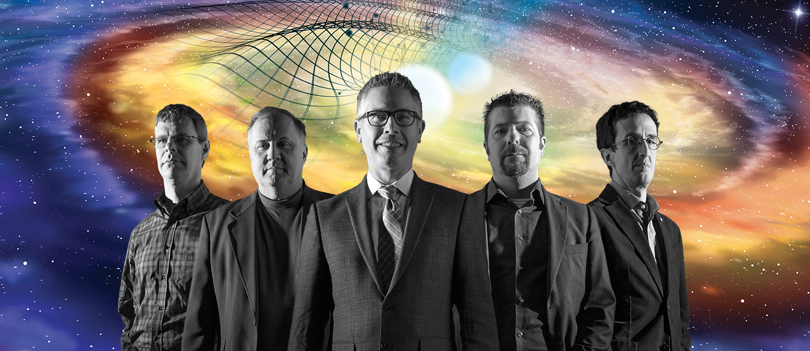

---
layout: content
title: CGCA - News
description: News about the center
heading: Recent News
lead: News about the Center, its members, and the projects they are involved in.
---    
<main role="main">
      <div class="container marketing">

        <!-- START THE FEATURETTES -->

        <div class="row featurette">
          <div class="col-md-7 order-md-2">
            <h2 class="featurette-heading">July 5, 2018: <span class="text-muted">Einstein's theory of gravity holds – even in extreme conditions</span></h2>
            <p class="lead">Work published today in the journal Nature by an international collaboration including CGCA professor David Kaplan has put Einstein's theory of General Relativity to another strict test, and found that it passed with flying colors. </p>
    <p><a class="btn btn-lg btn-primary" href="news/news_20180705.html" role="button">Read more</a></p>

</div>
          <div class="col-md-5 order-md-1">
            
          </div>
        </div>

        <hr class="featurette-divider">

        <div class="row featurette">
          <div class="col-md-7">
            <h2 class="featurette-heading">May 1, 2018: <span class="text-muted">Radio emission from GW170817 fading</span></h2>
            <p class="lead">CGCA Prof. David Kaplan has written an
          article for The Conversation with colleague Prof. Tara
          Murphy discussing the 6+ months of radio observations of the
    neutron star merger.</p>
    <p><a class="btn btn-lg btn-primary" href="news/news_20180501.html" role="button">Read more</a></p>
          </div>
          <div class="col-md-5">
            
			  <p><small><span class="text-muted">Image
          credits: David Kaplan/Mooley et al. (2008), Nature, 554, 207</span></small></p>

    </div>
        </div>

        <hr class="featurette-divider">

        <div class="row featurette">
          <div class="col-md-7 order-md-2">
            <h2 class="featurette-heading">Feb 27, 2018: <span class="text-muted">LIGO Discovery Featured in UWM Research Magazine</span></h2>
            <p class="lead">Work by the CGCA in the Nobel-prize winning discovery of gravitational
waves from colliding black holes <emph>and</emph> the subsequent
discovery of multi-messenger emission from colliding neutron stars is
featured in the 2018 UWM Research Magazine.</p>
    <p><a class="btn btn-lg btn-primary" href="news/news_20180227.html" role="button">Read more</a></p>

</div>
          <div class="col-md-5 order-md-1">
            
          </div>
        </div>

        <hr class="featurette-divider">

        <div class="row featurette">
          <div class="col-md-7">
            <h2 class="featurette-heading">Feb 23, 2018: <span class="text-muted">Prof. Dawn Erb Named Kavli Frontiers of Science Fellow</span></h2>
            <p class="lead">UWM Physics professor Dawn Erb was named a
          <a
          href="http://www.nasonline.org/programs/kavli-frontiers-of-science/"><span
          class="s1">Kavli Frontiers of Science
Fellow</span></a> by the National Academy of Sciences.</p>
    <p><a class="btn btn-lg btn-primary" href="news/news_20180223.html" role="button">Read more</a></p>

</div>
          <div class="col-md-5">
            
          </div>
        </div>
        <!-- /END THE FEATURETTES -->       
     </div><!-- /.container -->	
